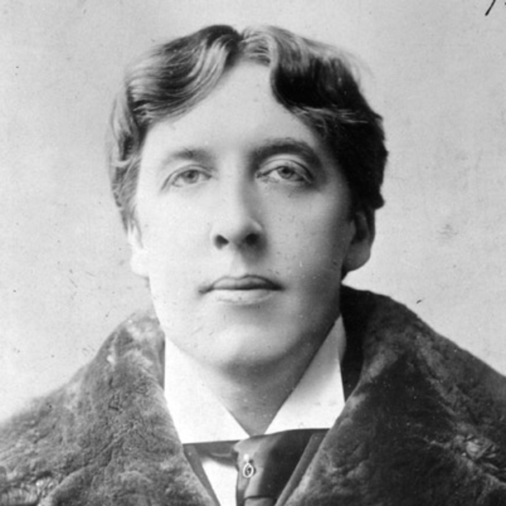

Біографія
Повне ім'я - Оскар Фінгал О'Флаерті Віллс Уайльд.
За походженням – ірландець. Народився 16 жовтня 1854 року в Дубліні
у вельми відомій родині. Батько, сер Вільям Уайльд,
був лікарем-офтальмологом зі світовим ім'ям, автором
багатьох наукових праць; мати - світська дама, що писала вірші про
Ірландію і визвольний рух і вважала свої прийоми літературним салоном.
Молодий Уайльд ріс в атмосфері поезії та афектовано-театральної екзальтації,
що не могло не позначитися на його подальшій творчості та способі життя.
Закінчивши школу, він проводить кілька років у привілейованому дублінському
коледжі Трійці, після чого вступає до Оксфорду. Тут, під впливом лекцій
Джона
Рескіна, поетів-романтиків та мистецтва прерафелітів, формуються
естетичні
погляди блискучого студента. Культ Прекрасного, гарячим
пропагандистом якого став
Уайльд, привів юнака до бунтарства проти
буржуазних цінностей, але до бунту скоріше
чисто естетичного,
що виявлявся не тільки у вишукано-гарних віршах, а й у
нарочито-епатажному
стилі одягу та поведінки. (Пізніше соняшник замінить знаменита
уайльдівська
зелена гвоздика), штучно-манерні, майже ритуальні мовні інтонації. Чи не
вперше в історії культури художник, літератор розглядав все своє життя як
естетичний акт,
Сальвадора Далі . Однак те, що у XX столітті стало майже художньою нормою, для вікторіанської
Англії кінця XIX століття було недозволеним. Це призвело до трагедії Уайльда.
30 листопада 1900 життя Уайльда обірвалося в результаті хвороби (менінгіту).